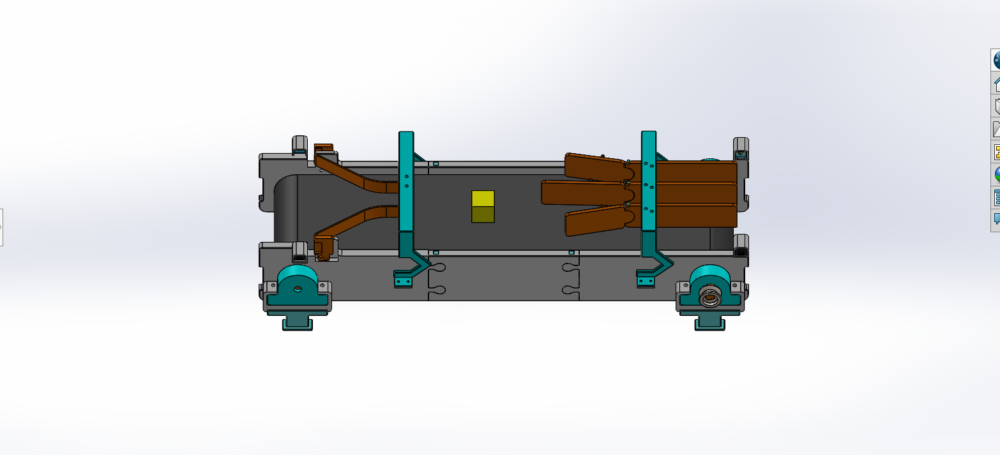
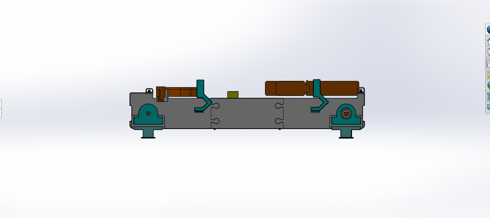

Contexte du projet
Le TRC 2025 (Tekbot Robotics Challenge) est une compétition internationale qui met au défi les équipes étudiantes de développer des solutions robotiques innovantes.
Détails du projet
- Durée : 1 mois
- Critères d'évaluation : Innovation, Fonctionnalité
- Travail d'équipe : 10 membres multidisciplinaires
Objectif du projet
Concevoir un convoyeur intelligent capable de détecter et trier automatiquement quatre types de déchets.
Détection par couleur
Utilisation d'un capteur de couleur avancé pour identifier les différents types de déchets selon leur teinte dominante.
Tri par servo-moteurs
Système de tri automatisé utilisant des servo-moteurs pour orienter précisément les objets détectés vers la zone de collecte appropriée.
Interface web
Dashboard complet pour le suivi en temps réel des opérations, statistiques de tri et contrôle à distance du système.
Qu'est-ce qu'un convoyeur ?
Un convoyeur est un dispositif mécanique permettant de transporter automatiquement des objets ou des matériaux d’un point à un autre, utilisé dans de nombreux domaines pour faciliter le déplacement et la manutention.
Ces systèmes mécanisés constituent l'épine dorsale de la manutention moderne dans des secteurs variés : agroalimentaire, logistique, automobile, ou encore recyclage. Leur adoption permet une optimisation radicale des flux de production.
Productivité
Jusqu'à 300% d'augmentation du débit par rapport à la manutention manuelle
Rentabilité
ROI typique en 12-18 mois grâce aux économies de main-d'œuvre
Sécurité
Réduction de 80% des accidents liés à la manutention
Durabilité
Optimisation énergétique avec moteurs à vitesse variable
Les convoyeurs modernes intègrent des technologies IoT pour le monitoring en temps réel et l'analyse prédictive des pannes, révolutionnant la gestion des opérations industrielles.
Historique des convoyeurs
L'évolution des systèmes de transport de matériaux à travers les âges
Convoyeurs manuels
Avant 1800 - Transport de matériaux par la force humaine ou animale, utilisant des paniers, brouettes et chariots.
Convoyeurs manuels
Avant 1800 - Transport de matériaux par la force humaine ou animale, utilisant des paniers, brouettes et chariots.
Convoyeurs à chaîne
A partir de 1800 - Premiers systèmes mécanisés utilisant des chaînes pour déplacer des matériaux dans les mines et usines.
Convoyeurs à chaîne
A partir de 1800 - Premiers systèmes mécanisés utilisant des chaînes pour déplacer des matériaux dans les mines et usines.
Convoyeurs à tapis
Début 1900 - Introduction des bandes transporteuses en caoutchouc, révolutionnant la production de masse.
Convoyeurs à tapis
Début 1900 - Introduction des bandes transporteuses en caoutchouc, révolutionnant la production de masse.
Automatisation moderne
Début 2000 - Intégration de capteurs, IA et systèmes de contrôle informatisés pour des convoyeurs intelligents et autonomes.
Automatisation moderne
Début 2000 - Intégration de capteurs, IA et systèmes de contrôle informatisés pour des convoyeurs intelligents et autonomes.
Types de convoyeurs
Des solutions variées adaptées à chaque besoin spécifique

Convoyeur à bande
Système continu utilisant une bande sans fin pour transporter des matériaux.

Convoyeur à rouleaux
Série de rouleaux parallèles pour charges palettisées ou en conteneurs.

Convoyeur à chaîne
Utilise des chaînes pour tirer des palettes ou des chariots.

Convoyeur à vis
Hélice rotative pour déplacer des matériaux granulaires ou poudreux.
Notre choix stratégique pour le TRC 2025
Face aux exigences du challenge, notre sélection s'est portée sur un convoyeur à bande modulaire, offrant le meilleur compromis entre performance, précision et adaptabilité aux contraintes du concours.
Critères TRC
Réponse optimale aux exigences de tri, rapidité et fiabilité imposées par le règlement
Modularité
Adaptable aux 4 catégories de déchets avec reconfiguration rapide
Performance
Débit conforme aux attentes avec marge de sécurité
Intégration
Solution compatible avec l'ensemble des sous-systèmes requis
Avantage compétitif
Combinaison unique de simplicité mécanique et d'intelligence embarquée

Pourquoi un convoyeur à bande pour notre projet ?
Après une analyse approfondie des différentes options, le convoyeur à bande motorisée s'est imposé comme la solution optimale pour notre système de tri des déchets.
- Facilité de conception et de fabrication pour notre équipe
- Compatibilité parfaite avec les composants Arduino pour le contrôle
- Précision de mouvement nécessaire pour le positionnement des déchets
- Surface plane idéale pour la détection par capteur de couleur
- Possibilité d'intégrer facilement des mécanismes de tri latéraux

Les 3 domaines clés du projet
Une approche multidisciplinaire pour une solution complète
Électronique
- Utiliser ATmega328P ou Arduino Nano comme microcontrôleur
- Intégrer un capteur de couleur pour identifier les déchets (4 couleurs)
- Implémenter un système de détection (laser KY-008 ou photorésistance)
- Concevoir un PCB optimisé avec KICAD (pas de breadboard)
- Alimentation par batteries lithium
Informatique
- Développer un algorithme de tri des déchets par couleur
- Créer une interface web temps réel avec quantités de déchets triés
- Intégrer les logos TEKBOT et TRC 2025 dans l'interface
- Assurer la communication microcontrôleur ↔ interface web
- Optimiser le code (éviter les fonctions bloquantes)
Mécanique
- Modéliser en SolidWorks un convoyeur (650mm long, 100mm haut)
- Prévoir un système de guidage pour le tri des cubes (30mm)
- Valider la faisabilité pour impression 3D/assemblage
- Réaliser une simulation mécanique (bonus)
- Documenter les choix techniques et contraintes
Découvrez notre interface de contrôle
L'équipe informatique a développé une interface web avancée pour le suivi et le contrôle du convoyeur en temps réel.
Accéder au dashboardL'équipe a également implémenté une documentation complète dans chaque domaine (électronique, mécanique, informatique) concernant la réalisation du convoyeur demandé.
Nos autres tests & projets documentés
En plus du convoyeur présenté ici, notre équipe réalise régulièrement d'autres tests et prototypes, tous soigneusement documentés et mis à disposition sur notre espace GitHub. Vous pouvez y retrouver l'historique de nos projets, les dossiers techniques, les codes sources et les retours d'expérience.
Accédez à l'ensemble de nos réalisations passées et suivez l'évolution de nos travaux !
Voir la documentation GitHub Accéder à la page Documentation